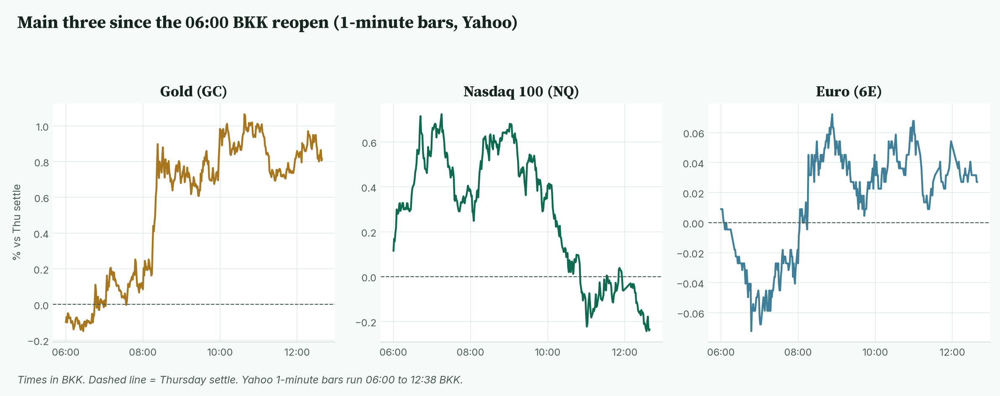
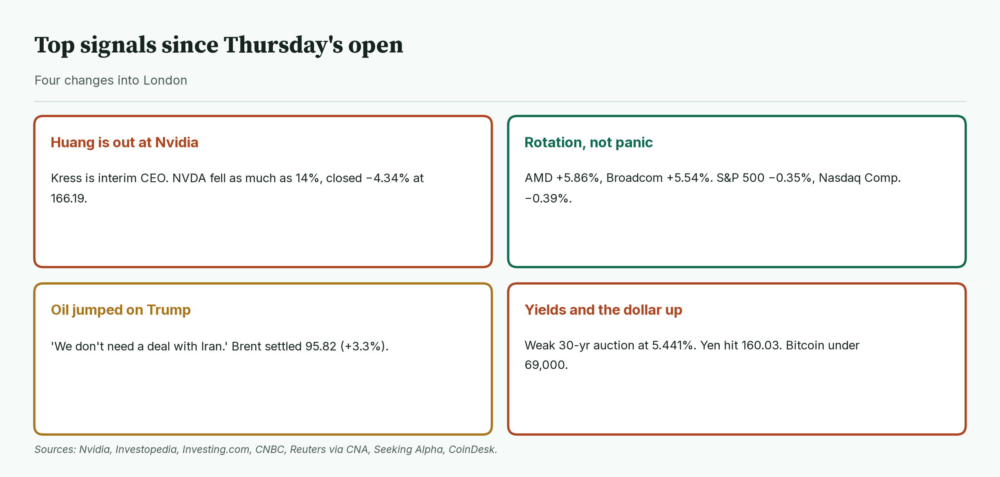
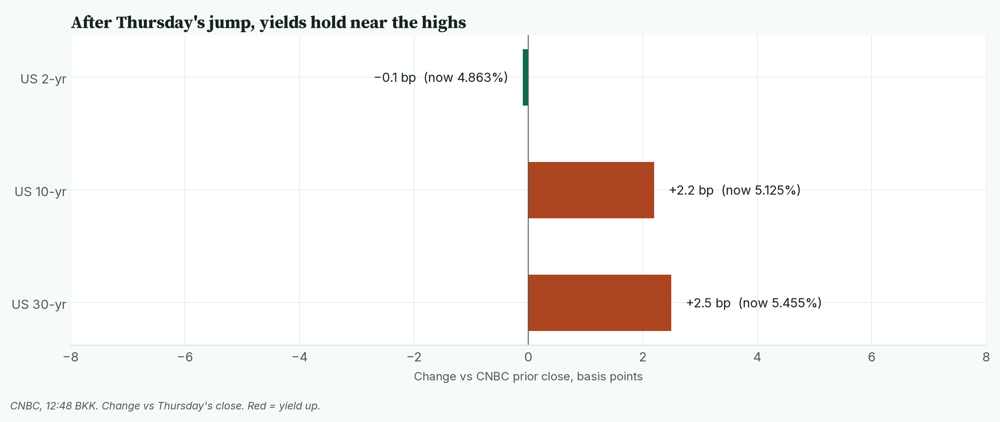
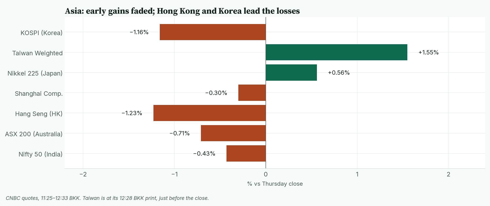
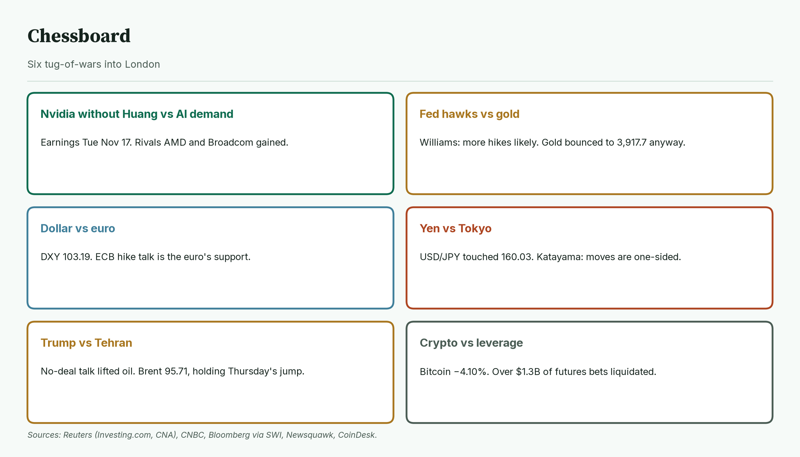
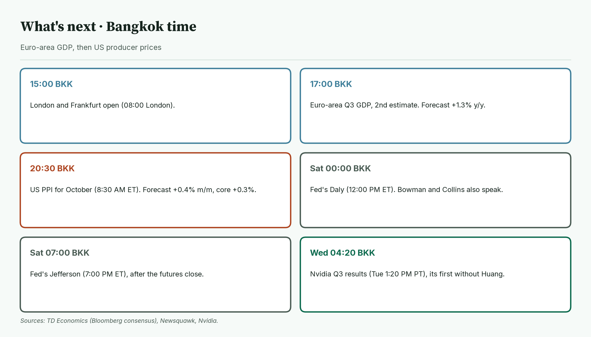
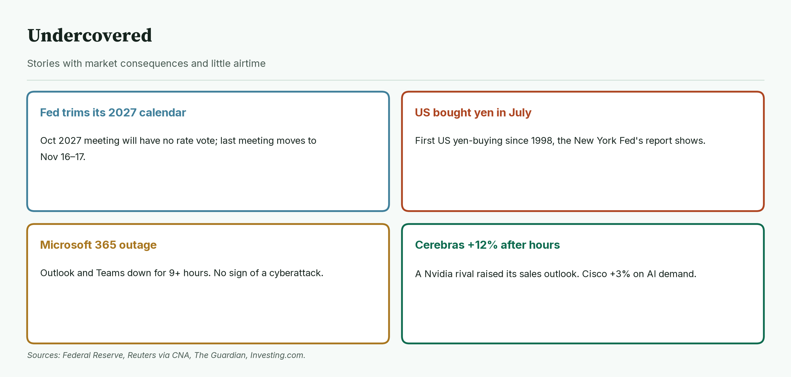
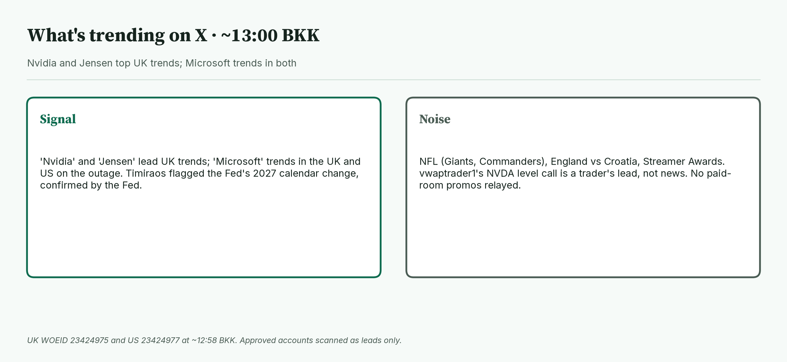

April · Market Intel, pre-London · Fri Nov 13, 2026 · ~13:15 BKK / ~06:15 London
Headline: Jensen Huang is out at Nvidia, and Nasdaq futures are sliding into London at 28,318.00 (−0.23%), right at their session low. Gold futures bounced to 3,917.7 (+0.83%) after three down days. Euro futures are flat at 1.1072 (+0.03%). Euro-area GDP at 17:00 BKK and US producer prices (PPI) at 20:30 BKK decide the session.
So what: Nvidia's shock turned into a rotation, not a crash. The bigger weight now is the Fed: yields, the dollar and oil all rose on Thursday.
 Caption: Futures at 12:38 BKK versus Thursday's settle. Gold leads, Nasdaq lags, and Bitcoin is the big loser. The VIX is Thursday's close.
Caption: Futures at 12:38 BKK versus Thursday's settle. Gold leads, Nasdaq lags, and Bitcoin is the big loser. The VIX is Thursday's close.
1) Main instruments The three main contracts since the 06:00 BKK reopen, as a % move from Thursday's settle. Gold jumped around 08:00 BKK. Nasdaq faded all morning. |
 Caption: The three main contracts since the 06:00 BKK reopen, as a % move from Thursday's settle. Gold jumped around 08:00 BKK. Nasdaq faded all morning.
(Quotes are Yahoo Finance futures at 12:38 BKK (05:38 London), matching CNBC. Session highs and lows use Yahoo 1-minute bars from the 06:00 BKK CME reopen (18:00 New York Thursday).)
Caption: The three main contracts since the 06:00 BKK reopen, as a % move from Thursday's settle. Gold jumped around 08:00 BKK. Nasdaq faded all morning.
(Quotes are Yahoo Finance futures at 12:38 BKK (05:38 London), matching CNBC. Session highs and lows use Yahoo 1-minute bars from the 06:00 BKK CME reopen (18:00 New York Thursday).)
- Gold futures (GC, Dec): 3,917.7, +0.83%, at 12:38 BKK. Driver: a rebound after a three-session decline (Bloomberg via SWI). Thursday's settle was 3,885.3. Today's range is 3,879.1 (06:27 BKK) to 3,927.2 (10:38 BKK).
- Nasdaq 100 futures (NQ, Dec): 28,318.00, −0.23%, at 12:38 BKK. Driver: Nvidia without its founder, plus rising yields. Thursday's settle was 28,384.50. Today's range is 28,314.00 (12:34 BKK) to 28,607.75 (06:43 BKK). It is testing the low.
- Euro futures (6E, Dec): 1.1072, +0.03%, at 12:38 BKK. Driver: a firm dollar against reports the ECB also sees a December hike (Newsquawk). Thursday's settle was 1.1069. Today's range is 1.1061 (06:47 BKK) to 1.1077 (08:53 BKK).
- Takeaway: gold is the bounce, Nasdaq is the drag, and the euro is waiting.
Context. The dollar index (DXY, the dollar against six major currencies) is 103.193, +0.02% (CNBC, 12:48 BKK), near its highest since April 2025 (CoinDesk). The 10-year US yield (what the US government pays to borrow for 10 years) is 5.125%, up 2.2 basis points (CNBC, 12:48 BKK; a basis point is 0.01 percentage point). The VIX (the "fear gauge" built from S&P 500 option prices) closed Thursday at 18.70, +6.92% (CNBC). US oil (CL, December) is 88.30, −0.50% (12:38 BKK). S&P 500 futures (ES) are 7,613.00, −0.03% (12:38 BKK). Bitcoin is $68,491, −4.10% versus CNBC's previous close (CNBC/Coin Metrics, 12:48 BKK).
2) Top signals Four changes since Thursday's open. Huang left, money rotated to Nvidia's rivals, oil jumped and yields climbed. |
 Caption: Four changes since Thursday's open. Huang left, money rotated to Nvidia's rivals, oil jumped and yields climbed.
Caption: Four changes since Thursday's open. Huang left, money rotated to Nvidia's rivals, oil jumped and yields climbed.
- Huang resigned, effective immediately. CFO Colette Kress is interim CEO, and Harvey Jones is the board's first-ever chair (Nvidia, SEC filing).
- Nvidia fell as much as 14%, then closed −4.34% at 166.19 (Investopedia, Motley Fool).
- Money rotated, it did not flee. AMD +5.86%, Broadcom +5.54%. The S&P 500 fell 0.35% and the Nasdaq Composite 0.39% (Investing.com).
- After the bell, Cisco rose 3% on a beat and a raised outlook. Applied Materials slipped 1.6% despite a beat (Investing.com).
- Takeaway: the market is pricing Nvidia's leadership risk, not the end of AI spending.
3) Rates, FX and oil Yields barely moved in Asia after Thursday's jump. The 30-year leads again. |
 Caption: Yields barely moved in Asia after Thursday's jump. The 30-year leads again.
Caption: Yields barely moved in Asia after Thursday's jump. The 30-year leads again.
- CNBC, 12:48 BKK: 2-year 4.863% (−0.1 bp), 10-year 5.125% (+2.2 bp), 30-year 5.455% (+2.5 bp).
- Thursday's selloff was led by the 2-year, up 14 bp (Bloomberg via SWI).
- The 30-year auction was weak. It sold at 5.441%, 0.4 bp above where it traded beforehand (Seeking Alpha). That gap is called a "tail," and it means buyers demanded a discount.
- Fed tone. New York Fed President Williams said more rate increases are likely (Reuters via Investing.com). Markets broadly expect a quarter-point hike in December and another in January (Reuters).
- Yen. USD/JPY touched 160.03, past 160 for the first time since early September. Finance Minister Katayama warned the moves are "one-sided and rapid" (Reuters via CNA). It is 159.92 now (CNBC, 12:48 BKK).
- Oil. Brent settled 95.82 (+3.3%) and WTI 88.74 (+2.6%) after Trump wrote, "We don't need a deal with Iran" (CNBC, Reuters via CNA). January Brent is 95.71, −0.11% now (CNBC, 12:38 BKK).
- Takeaway: higher short-term yields and a firm dollar are the headwind for gold and Nasdaq.
4) Why it matters Asia at CNBC's prints, 11:25 to 12:33 BKK. Early gains faded. Hong Kong and Korea lead the losses, Taiwan bounced. |
 Caption: Asia at CNBC's prints, 11:25 to 12:33 BKK. Early gains faded. Hong Kong and Korea lead the losses, Taiwan bounced.
Caption: Asia at CNBC's prints, 11:25 to 12:33 BKK. Early gains faded. Hong Kong and Korea lead the losses, Taiwan bounced.
- Asia opened higher and gave it back. The MSCI Asia Pacific index rose as much as 1.1%, then went flat (Bloomberg via SWI).
- KOSPI −1.16%, Hang Seng −1.23%, Nikkei +0.56%, Taiwan +1.55% (CNBC, 12:28 to 12:33 BKK).
- Japan's 10-year yield rose 7 bp to 2.870% (Bloomberg via SWI), tracking Treasuries.
- Mentor: when US yields jump, the move spreads. Japanese and Australian bonds sold off overnight too. That raises borrowing costs worldwide and weighs on stocks with rich valuations, like tech.
- Takeaway: the risk is rates, not just one company.
5) Chessboard Six tug-of-wars into London. The Fed path and Nvidia move the main three fastest. |
 Caption: Six tug-of-wars into London. The Fed path and Nvidia move the main three fastest.
Caption: Six tug-of-wars into London. The Fed path and Nvidia move the main three fastest.
- Nvidia without Huang vs AI demand. Earnings land Tue Nov 17. Rivals gained on Thursday.
- Fed hawks vs gold. GC 3,917.7 is bouncing even as Williams talks up more hikes.
- Dollar vs euro. DXY 103.193. 6E 1.1072. ECB hike talk is the euro's support.
- Yen vs Tokyo. USD/JPY touched 160.03. Japan says it is working closely with the US Treasury (Reuters via CNA).
- Trump vs Tehran. Brent 95.71. Iran says it struck a US radar in Bahrain; that is an IRGC claim reported by Tasnim, not confirmed (via CoinDesk).
- Crypto vs leverage. Bitcoin −4.10%, its lowest since Aug. 19. Over $1.3 billion of crypto futures bets were force-closed in 24 hours (CoinDesk, citing Coinglass).
- Takeaway: every square on the board leans toward a stronger dollar.
6) Leading indicators (BKK times) London opens, euro-area GDP follows, then US PPI. Fed speakers run into the weekend. |
 Caption: London opens, euro-area GDP follows, then US PPI. Fed speakers run into the weekend.
Caption: London opens, euro-area GDP follows, then US PPI. Fed speakers run into the weekend.
- 15:00: London and Frankfurt open (08:00 London).
- 17:00: euro-area Q3 GDP, second estimate (5:00 AM ET). Forecast +1.3% year on year (TD Economics, Bloomberg consensus).
- 20:30: US producer prices (PPI) for October (8:30 AM ET). Forecast +0.4% month on month, core +0.3%. September was +1.3% and +0.7% (TD Economics). PPI tracks prices businesses get paid, and parts of it feed the Fed's preferred inflation gauge.
- Sat 00:00: Fed's Daly (12:00 PM ET). Governor Bowman and Boston's Collins also speak today (Newsquawk); I could not confirm their times.
- Sat 07:00: Fed's Jefferson (7:00 PM ET), after futures close.
- Also today: the IEA's monthly oil report, and rating reviews of Germany (Fitch) and Italy (S&P) after hours (Newsquawk).
- Levels to watch: GC 3,879.1 and 3,927.2. NQ 28,314.00 and 28,607.75. 6E 1.1061 and 1.1077. USD/JPY 160.03. Brent 96.
- Takeaway: a hot PPI pushes yields up and hurts gold and Nasdaq. A soft one gives both relief.
7) Undercovered Four stories with little airtime. They touch the Fed's calendar, the yen, Microsoft and Nvidia's rivals. |
 Caption: Four stories with little airtime. They touch the Fed's calendar, the yen, Microsoft and Nvidia's rivals.
Caption: Four stories with little airtime. They touch the Fed's calendar, the yen, Microsoft and Nvidia's rivals.
- The Fed changed its 2027 calendar. The Oct. 26–27, 2027 meeting will be a strategy session with no rate vote. The final 2027 meeting moves to Nov. 16–17 (Federal Reserve).
- The US bought yen in July. The New York Fed bought 79.4 billion yen on July 31, its first yen-buying intervention since 1998 (Reuters via CNA). That makes joint US–Japan action at 160 more believable.
- Microsoft 365 was down for more than nine hours. Outlook and Teams were hit, and Microsoft says there is no sign of a cyberattack (The Guardian).
- Cerebras rose 12% after hours. The Nvidia rival raised its 2026 sales outlook to $940–960 million (Investing.com).
8) What's trending on X (~12:58 BKK) Nvidia and Jensen top UK trends. Microsoft trends on both sides of the Atlantic. The rest is sport. |
 Caption: Nvidia and Jensen top UK trends. Microsoft trends on both sides of the Atlantic. The rest is sport.
Caption: Nvidia and Jensen top UK trends. Microsoft trends on both sides of the Atlantic. The rest is sport.
- UK: Nvidia, Jensen, Microsoft, #ENGCRO.
- US: Giants, Jayden Daniels, Microsoft.
- Signal: Nick Timiraos flagged the Fed's 2027 calendar change, which the Fed's own release confirms.
- Lead: vwaptrader1 says Nvidia found buyers near $149.60. Nvidia's reported low was $148.80 (Motley Fool). It's a trader's level, not news.
- Approved accounts: Smashelito's ES plan is order flow only. Tavi Costa had no new posts. No JJ / vwaptrader1 paid-room promos relayed.
- Noise: NFL Thursday night, England vs Croatia, the Streamer Awards.
Bottom line: Nvidia's shock is fading, but the Fed trade is not. For Jim: Nasdaq at 28,318.00 sits on its 28,314.00 low; 28,607.75 is the ceiling. Gold at 3,917.7 sits inside 3,879.1 to 3,927.2, near the top. The euro at 1.1072 sits inside 1.1061 to 1.1077. Interpretive note: a break below Nasdaq's low before PPI would show sellers in control, and a soft PPI could lift gold through 3,927.2. Those are possible paths, not forecasts. 🔮 Interpretive, not data: Friday the 13th carries an old superstition, but numerologists read 13 as 1 plus 3, a four: the builder's number. Symbol, not signal.
Confidence: Futures levels: high (Yahoo, matching CNBC). Session ranges: Yahoo 1-minute bars from 06:00 BKK. Yields, DXY, VIX, yen, Bitcoin, Brent, Asia indexes: CNBC, time-stamped. Nvidia: company release and SEC filing. US closes and after-hours moves: Investing.com, Investopedia, Motley Fool. Oil: CNBC, Reuters via CNA. Bonds: Bloomberg via SWI, Seeking Alpha. Yen: Reuters via CNA. Calendar: TD Economics, Newsquawk. Crypto: CoinDesk. X posts: leads only. Removed: exact live Fed odds (no primary read this run) and the 30-year auction's bid-to-cover (sources disagreed).
Charts: /workspace/april-charts/2026-11-13/pre-london-{scoreboard,main3,signals,rates,asia,chess,leading,under,xsplit}.png |